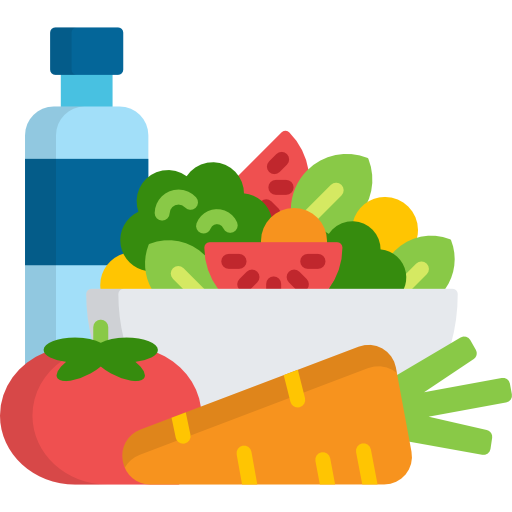
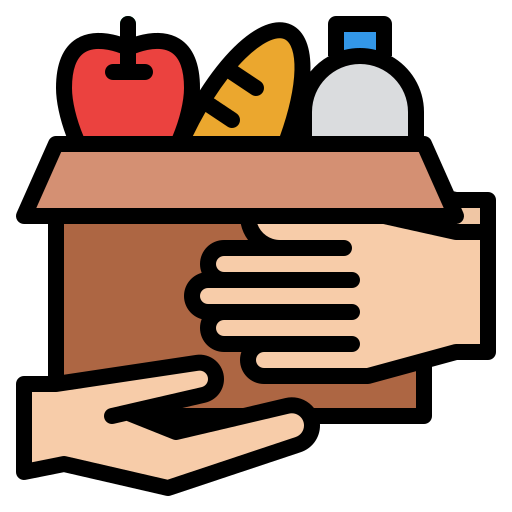
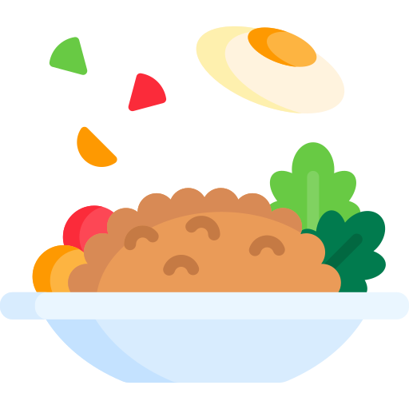

Dashboard
Manage food donations, volunteers and reports


Admin

Food Saved[kg]
445.6
Active Volunteers
22

Active Charities
35

Meals Delivered
1240
Monthly Report Overview
Report Summary
Total Donations
48
Food Collected
122.5 kg
Food Distributed
115.8 kg
Meals Provided
840
Active Donors
32
Active Volunteers
26
This report shows the donation and distribution activities recorded during August 2026.
Recent Activity
-Olympia Cafe donated 20 meals.
-Volunteer Rahim has been verified.
-Hope Foundation accepted a donation.
-New broadcast has been sent to all volunteers.